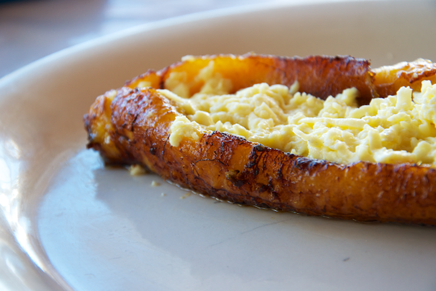

Inicio
Plátano al horno

Descripción
Plátanos Maduros al Horno con Queso
Ingredientes
- 2 Plátanos maduros.
- Mantequilla.
- 1 taza de queso rallado.
Pasos:
- Precalienta el horno a 400°grados. Cubre una charola apta para el horno con papel pergamino.
- Corta los extremos de los plátanos. Usando la punta del cuchillo, corta la cáscara a lo largo del plátano. Remueve la cáscara de los plátanos de lado a lado en lugar de a lo largo. Coloca los plátanos en la charola para hornear y unta cada uno con la mantequilla.
- Coloca la charola en el horno y cocina los plátanos de 15-20 minutos, luego voltéalos y sigue horneando de 15-20 minutos mas, o hasta que estén ligeramente dorados y tiernos.
- Retira los plátanos del horno, deja que se enfríen por un par de minutos; Haz un corte a lo largo de los plátanos dejando al menos 2 pulgadas en cada extremo para que al momento que se rellenen se mantengan enteros. Usa un cuchillo, o cuchara para separar la parte que cortaste y crear una abertura para el queso. Rellena cada plátano con ½ taza de Queso Chihuahua®. Vuelve a colocarlos en el horno y continúa horneando de 5-7 minutos o hasta que el queso se derrita y este ligeramente dorado.